Two camera streams plus 10 sensor streams, all on the same clock, and the factory calibration. Everything below them is computed offline.
Sensors
Sensor
Chip
Rate
Samples
Accuracy
Accelerometerspecific force, m/s²
lsm6dsv_0STMicro
457 Hz
7,492
high
Accelerometer, uncalibrated+ bias estimate
lsm6dsv_0STMicro
457 Hz
7,499
high
Gyroscopeangular rate, rad/s
lsm6dsv_0STMicro
455 Hz
7,462
high
Gyroscope, uncalibrated+ drift estimate
lsm6dsv_0STMicro
455 Hz
7,466
high
Gravityfused gravity vector
software fusionQTI
182 Hz
2,988
high
Game rotation vectororientation, no magnetometer
software fusionQTI
182 Hz
2,989
high
Rotation vectororientation + heading accuracy
software fusionQTI
182 Hz
2,986
high
Magnetometerfield, µT
ak0991x_0akm
100 Hz
1,640
low
Magnetometer, uncalibrated+ hard-iron estimate
ak0991x_0akm
100 Hz
1,640
high
Barometerpressure, hPa
bmp5BOSCH
12 Hz
203
high
Location was off, so there is no declination and heading is magnetic north. The magnetometer also reported low accuracy (it needs a figure-8 calibration).
RANSAC planes in the gravity-aligned cloud (desk, monitor), then the object standing on the support plane is measured.
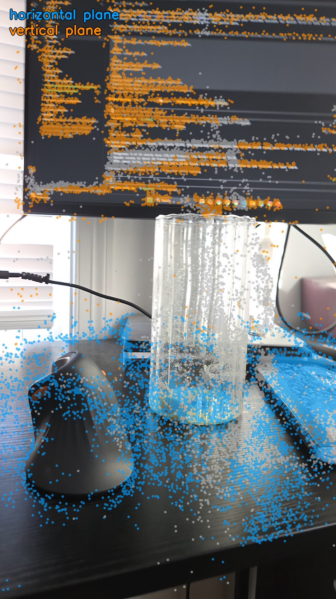
detected planes
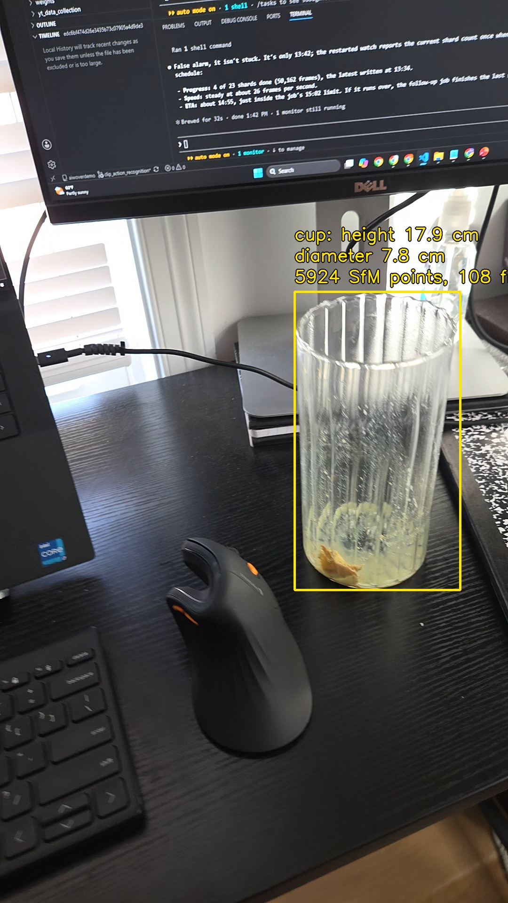
cup measurement
17.9 cmcup height
7.8 cmcup diameter
16.2 cmreal cup height+11% (+1.7 cm)
7.2 cmreal cup diameter+9% (+0.6 cm)
Real size: user, tape measure (2026-10-26). Both dimensions read 10% large, which points to an overall scale error rather than noise.
SfM points through/off a transparent glass are sparse; treat as approximate
horizontal plane
17,214 pts · normal [0.02, 0.03, 1.0]
vertical plane
11,071 pts · normal [-0.41, 0.91, 0.09]
horizontal plane
3,395 pts · normal [-0.02, 0.03, 1.0]
horizontal plane
2,962 pts · normal [0.03, 0.02, 1.0]
oblique plane
2,089 pts · normal [-0.96, -0.06, 0.26]
oblique plane
1,728 pts · normal [-0.13, 0.72, 0.68]
4
Stereo + Depth Pro depth, camera trajectory
Wide/ultrawide stereo with factory calibration, Apple Depth Pro on the same frame, and the two fused where they agree.
79%stereo valid pixels
0.79×Depth Pro scale to stereo
0.26°gyro vs SfM rotation
-14 msIMU–camera offset
trajectory length
2.48 m
gyro vs SfM error (p90)
0.68°
time offset correlation
r = 0.95
stereo baseline
15.6 mm
rectified focal
667 px
How the fusion works
Frame 60. Every depth panel uses the same colour range (0.31–0.76 m); red is near, blue is far.
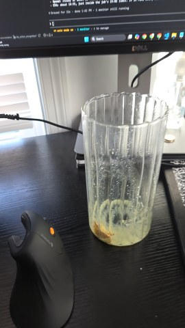
1Rectified wide frame
Wide + ultrawide rectified with the factory calibration (15.6 mm baseline).
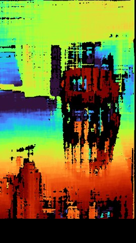
2Stereo depth
Metric, but holes on glass, glossy and blank surfaces: 71% of pixels valid.
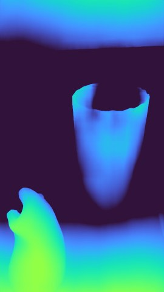
3Depth Pro (raw)
Dense from a single image, but its metric scale drifts from frame to frame.
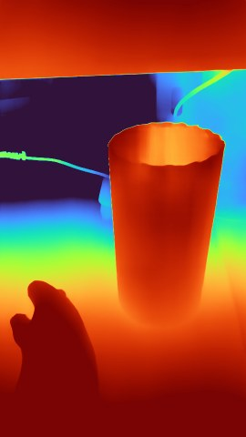
4Scale to stereo, ×0.51
Multiply by this frame's median stereo / Depth Pro ratio.
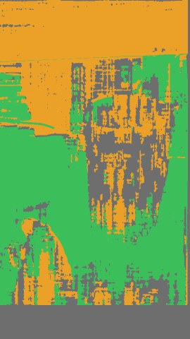
5Agreement check
Where both agree within 15%, average them; elsewhere use scaled Depth Pro.
agree 37%disagree 35%hole 29%
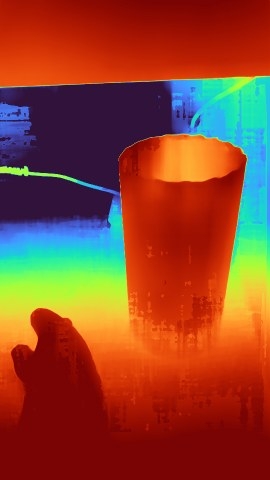
6Fused depth
Every pixel filled; metric scale from stereo, edges and shape from Depth Pro.
Accuracy: stereo vs Depth Pro vs fused
Reference: 91,327 metric SfM points over 106 frames, each triangulated from 3+ views with reprojection error under 1.5 px.
Each method's depth is sampled at those points. AbsRel = mean |error| / true depth; scale bias = median predicted / true; best per column in blue.
Method
Coverage
AbsRel
Within 10%
Within 25%
Scale bias
Stereo
90%
6.7%
77%
96%
0.99×
Depth Pro, raw metric
100%
30.9%
22%
56%
1.20×
Depth Pro scaled to stereo
100%
10.8%
54%
88%
0.95×
Fused (stereo + Depth Pro)
100%
9.8%
59%
89%
0.96×
Stereo, oracle scale
90%
4.3%
88%
97%
1.00×
Depth Pro, oracle scale
100%
5.7%
84%
92%
1.00×
Where stereo has no depth
9,356 reference points (10%) land in stereo holes. Only Depth Pro covers these, so here the fused result is scaled Depth Pro.
Method
AbsRel
Within 10%
Scale bias
Depth Pro, raw metric
32.3%
30%
1.15×
Depth Pro scaled to stereo
13.7%
26%
0.87×
Fused (stereo + Depth Pro)
13.7%
26%
0.87×
What fusion buys: raw Depth Pro is off by 31% on average; taking the scale from stereo cuts that to 10.8%.
In stereo holes (10% of points) fused depth is 13.7% off, where stereo alone has nothing.
What it costs: where stereo has depth, stereo alone (6.7%) beats fused (9.4%), because the current rule trusts Depth Pro wherever the two disagree.
Keeping stereo wherever it is valid and using scaled Depth Pro only in the holes would give about 7.5% overall with full coverage.
Oracle rows rescale each frame to the reference: they measure shape only and are not available at run time.
Caveats: SfM points sit on textured surfaces, where stereo works best, so these numbers flatter stereo. SfM and stereo share the 15.6 mm factory baseline, so a baseline error would not show in scale bias; a tape-measured distance would catch it.
5
Gaussian splat (Brush)
A photoreal 3D model you can fly around: about a quarter of a million small coloured Gaussians fitted to the wide + ultrawide frames, starting from the metric, gravity-aligned SfM poses.
247kGaussians
232input frames (wide + ultrawide)
23 min30,000 steps on one T4
What holds up: desk, cup, mouse and notebook from above and from farther back. What breaks: anything the phone only glimpsed (scene edges, behind the monitor) smears into streaks, and so does any view far outside the recorded arc.
Rendered from camera positions the phone never occupied. The fly-around is 1.35× farther out and 18° higher than the recording (which orbited at 39 cm, 33° up, over 104°).
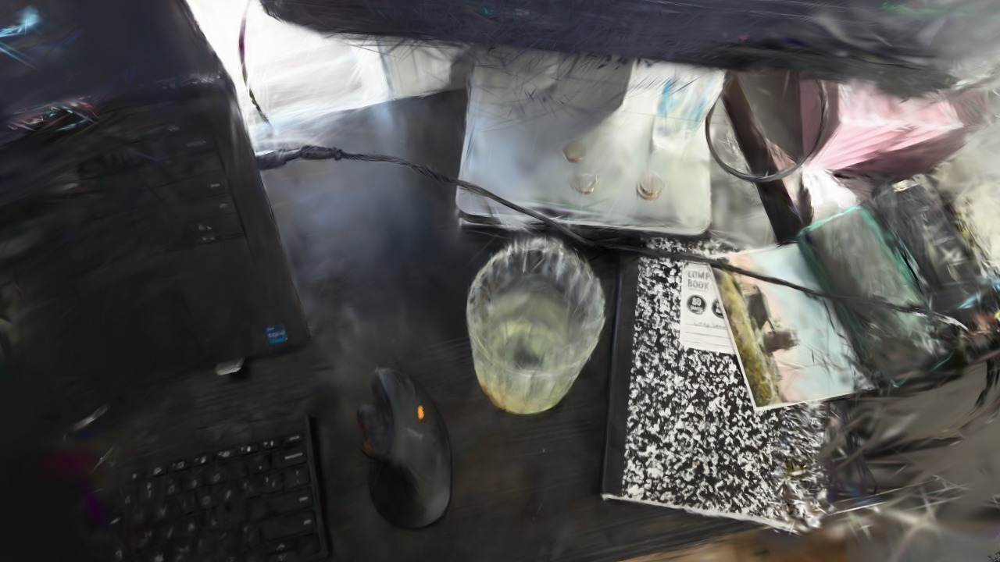
Straight down from above · the phone never looked down at the desk
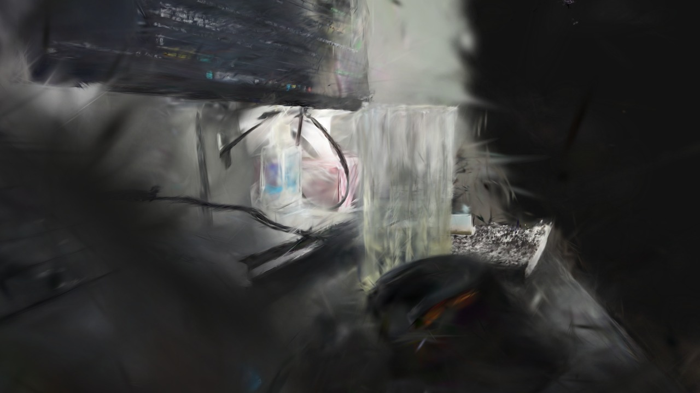
Low, grazing angle · below and past the end of the recorded arc
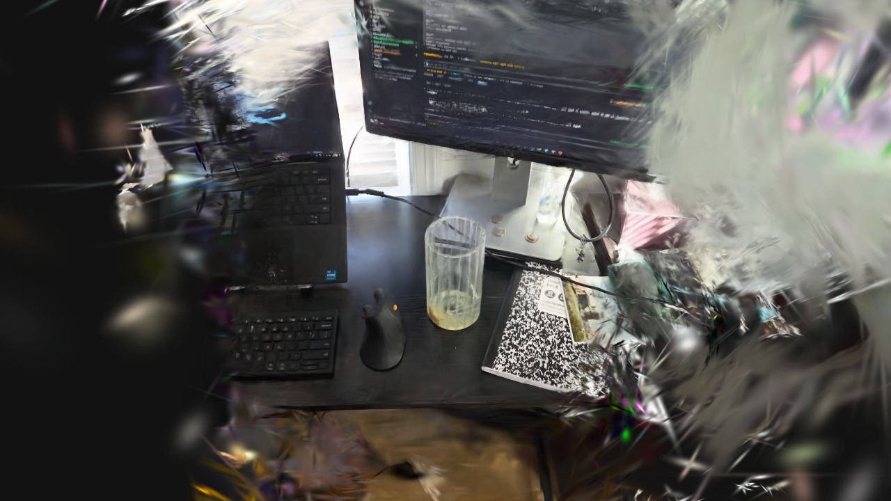
Pulled far back · 2.4× farther than the phone ever was
6
Dense cloud (MapAnything)
Meta's MapAnything predicts depth and camera poses for all views in one network pass: a dense cloud without per-pixel matching. Shown at SfM scale (its own metric scale was far off).
551kpoints (4 mm voxels)
116views in one pass
5.45×MapAnything's own scale vs SfM
Visual only, not a measurement. A looks cleaner (cup rim visible as a ring from above); both clouds are geometrically weak: desk tilted 10.3 deg (A) / 6.6 deg (B) vs SfM desk, only 6-8% of points on a flat desk (SfM 25%), cup not reconstructed (glass). B kept the SfM poses (1.6 deg, 5 mm) but its desk sits 6-12 cm below the SfM desk. A native metric scale is 5.4x off; A is shown at SfM scale via Sim(3) on camera centres. Visual only, do not measure from it.
Run
Views
Points
Own scale vs SfM
Camera position error
Camera rotation error
MapAnything poses (A)
116
551,372
5.45×
0.022 m
8.54°
SfM poses given (B)
116
994,381
1.02×
0.006 m
1.56°
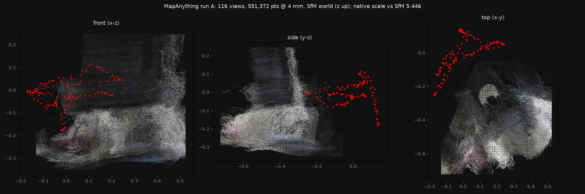
7
Camera trajectory: MegaSaM vs ground truth
MegaSaM estimates the camera path from the wide video alone (no IMU, no calibration). Here it is compared with the metric SfM trajectory on the same 116 frames, and again after fixing its scale with phone sensors.
ground truth (metric SfM)normal MegaSaM (dashed)fixed MegaSaM, phone scale (dotted)
Top-down, gravity-aligned. Both runs placed by rotation + translation only, no rescaling, so a wrong scale shows.Camera position error without rescaling (metric).
MegaSaM result, fixed with the phone's scale
Everything here is MegaSaM's own output: its depth for each frame (in metres via the phone stereo scale), its camera path, and the phone moving along it. The red arrow is the phone's gravity sensor carried into the scene by MegaSaM's rotation; it stays within 0.8° (median) of true up, so MegaSaM's orientation agrees with the phone IMU.
Play it yourself
Same data, interactive: play, scrub, orbit. This frame's points, the phone (white), its path so far (green), phone gravity (red) vs true up (grey).
MegaSaM's tracker normalises depth, so its output is in an arbitrary unit whatever depth it is given (feeding it the phone's metric depth and factory focal length changed nothing). The fix measures that unit afterwards with phone sensors: stereo depth vs MegaSaM depth gives ×0.617; the accelerometer, with no camera involved, gives ×0.610 (and recovers gravity as 9.77 m/s²). Run on the SfM path, the same IMU check says SfM is 6% too long, so part of the remaining difference is the ground truth's own scale error. Nothing from SfM is used in the fix.
Ground truth is our own SfM, whose metric scale comes from the 15.6 mm factory baseline (the cup measured ~10% large), so scale numbers compare MegaSaM to SfM, not to the real world. The stereo prior shares that baseline. Shape and rotation errors are unaffected.